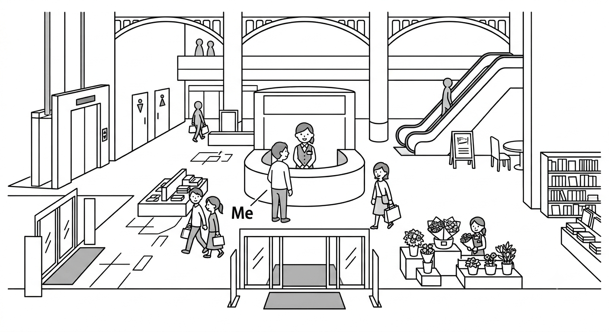

← 戻る
第3課 場所（ばしょ）といくら
目次
- ここ / そこ / あそこ
- こちら / そちら / あちら
- どこですか
- どちらですか
- 〇〇はどこの〇〇ですか
- いくらですか
- Kanji List
ここ / そこ / あそこ
- ここ = here (near the speaker)
- ここは 東京（とうきょう）です。→ This place is Tokyo.
- そこ = there (near the listener)
- 入口（いりぐち）は そこです。→ The entrance is there.
- あそこ = over there (far from both)
- 受付（うけつけ）は あそこです。→ The reception is over there.
こちら / そちら / あちら
- こちら・そちら・あちら = polite form of ここ・そこ・あそこ
- Use in formal situations
- こちら → ここ
- そちら → そこ
- あちら → あそこ
- 例（れい）
- 図書館（としょかん）は こちらです。→ The library is this way.
- 出口（でぐち）は あちらです。→ The exit is over there.
※If it's too difficult to remember ここ / そこ / あそこ, it's okay to remember only polite forms.
Let's make a conversation!（こちら / そちら / あちら）
案内所（あんないじょ）、エレベーター、トイレ・ 出口、入口、レストラン、花屋（はなや）、本屋（ほんや）

どこですか
- どこ = where
- 〇〇は どこですか。→ Where is 〇〇?
- 山（やま）は どこですか。→ Where is the mountain?
- → あちらです。→ It's over there.
- 川（かわ）は どこですか。→ Where is the river?
- → あそこです。→ It's over there.
どちらですか
- どちら = polite form of どこ
- Use in formal situations
- 〇〇は どちらですか。→ Where is 〇〇? (polite)
- 案内所（あんないじょ）は どちらですか。→ Where is the information desk?
- 花屋（はなや）は どちらですか。→ Where is the flower shop?
- →あちらです。→ It's over there.
※ どちら can also refer to a person (e.g. "Who are you?"), but we won't cover that in N5.
〇〇はどこの〇〇ですか
- どこの〇〇 = where is 〇〇 from
- こちらは どこの 車（くるま）ですか。→ Where is this car from?
- →こちらは 日本（にほん）の 車（くるま）です。→ This is a Japanese car.
- それは どこの 本（ほん）ですか。→ Where is this book from?
- →それは フランスの 本（ほん）です。→ This is a French book.
いくらですか
- いくら = how much
- 〇〇はいくらですか。→ How much is 〇〇?
- このアイスはいくらですか。→ How much is this ice cream?
- →このアイスは 120円（えん）です。→ It's 120 yen.
- →120円（えん）です。※You can drop the subject in casual conversation.
- これはいくらですか。
Kanji List
| 漢字 |
読み方 |
意味 |
| 東京 |
とうきょう |
Tokyo |
| 入口 |
いりぐち |
entrance |
| 出口 |
でぐち |
exit |
| 受付 |
うけつけ |
reception |
| 図書館 |
としょかん |
library |
| 山 |
やま |
mountain |
| 川 |
かわ |
river |
| 案内所 |
あんないじょ |
information desk |
| 花屋 |
はなや |
flower shop |
| 本屋 |
ほんや |
bookstore |
| 円 |
えん |
yen |